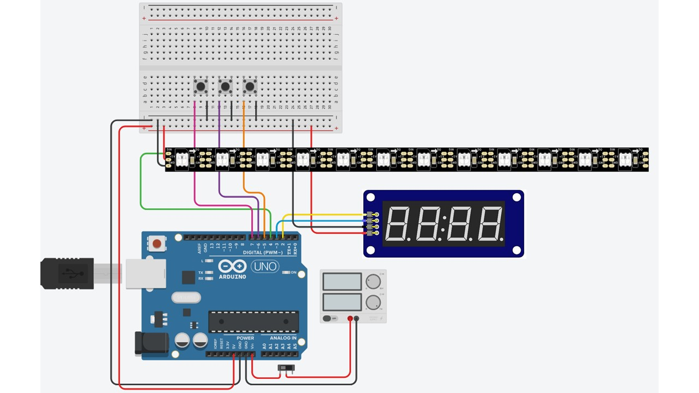
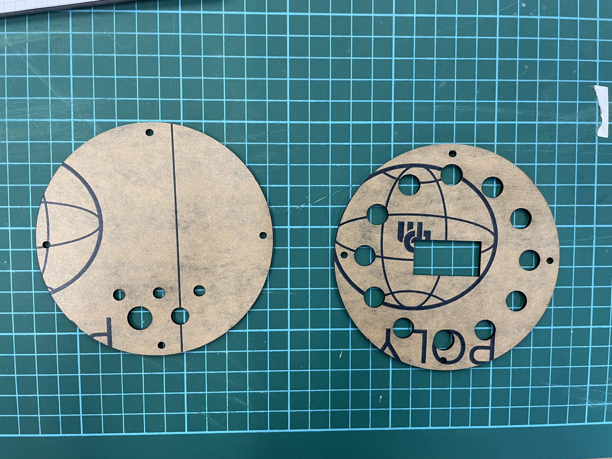
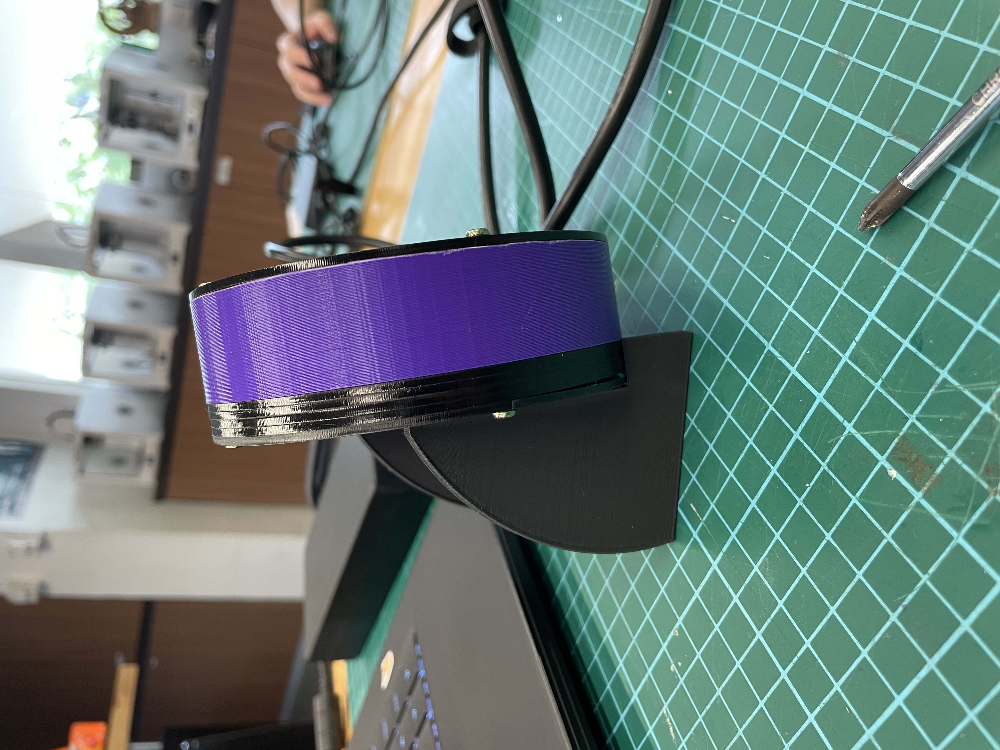
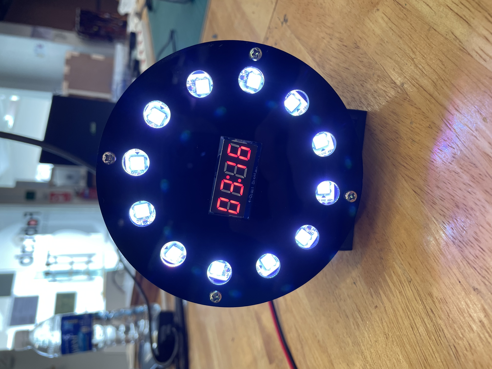
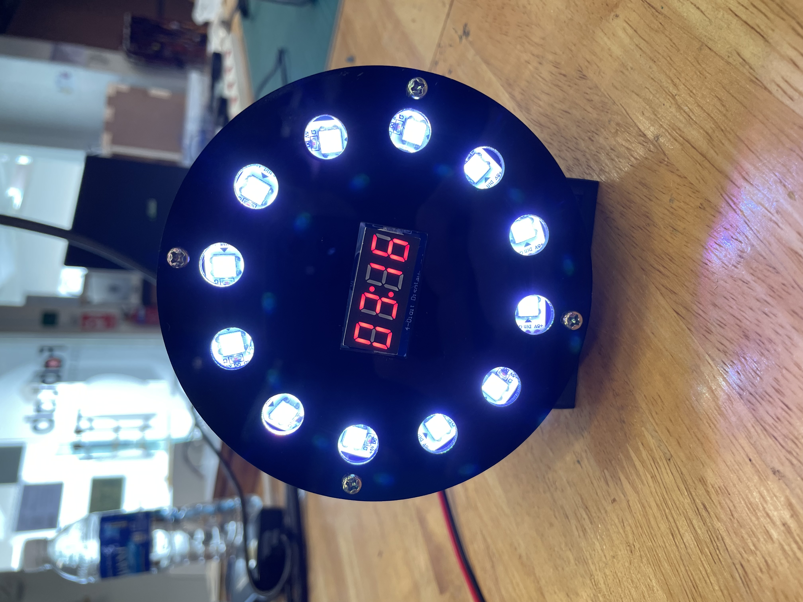

EP1000 Project
Contents
- Introduction
- Materials
- Project Ideation
- Electronics
- Modelling
- 3D Printing
- Laser Cutting
- Final Product
- Reflection
- Downloads
Introduction
This page is dedicated to documenting my final project of EP1000. I would be going through the ideation and design process of how I build my project. This is a step by step guide on how to make this project. Feel free to follow along to also build your own light clock. Downloads for the files will be included bellow.
{kind=link}
{kind=link}
Material
Here will be a list of materials needed for the project:
- NeoPixel RGB LED Strip. (At least 24 bulbs)
- 7 Segment Display - TM1637
- 3 Push Buttons
- 1 Switch
- 1 DC-in port
- Arduino Nano x1
- Some pieces of transparent acrylic
- 3D printing filament
Project Ideation
With the advice of my lecturer, Rodney Dorville, I decided that I would make a clock for my final project. After some brainstorming, I came up with the idea of using a LED strip to show the time. I initially wanted to use the Light to represent the Hour and Minutes, but concluded that it is a very generic idea. In the end, I made the outer ring of the clock using LEDs and have them show the seconds using brightness, and show the hours and mins on a seven segment display.
Here are some early sketches of my design.


Electronics
In this section, we will be going through all the circuitry and code used to make the project run.
Circuit
Here is the circuit diagram of my project. Take note of what pins the individual components are connected to. The 7 Segment Display (TM1637) is connected to pins 2, 3, +5v and ground. The NeoPixel Strip is connected to 4 and ground. The Push buttons are connected to 5, 6 and 7 respectively. Lastly, the DC power is connected to the VIN pin.
Before working with my Arduino Nano, I used a Arduino Uno to test the code and circuit. This is because the Uno has pre soldered female headers, making it easy to quickly test my circuit with ribbon cables. This prevent me from needing to solder anything before I was confident that my circuit would work.
Here is the working prototype

Jumper wires kept breaking because the wires are very thin. Soldering to the Neopixel is a very tedious process. Especially since I ended up cutting the strip into individual pixels and required to solder to everyone of them.
Code
The code for the project was written in Arduino IDE. I used 3 libraries in the embedded program. The first is Adafruit Neopixel. This library allows me to control the Neopixel LED strip and have them display different designs and pattern. The second library is TM1637Display. It allows me to quickly and easily display text on Tm1637 7Segment display. The last library is the Arduino library. Without it you would not be able to properly program and Arduino circuit.

Code Explained
Include is used to import C++ libraries. The 3 libraries used are the Arduino default
library, Neopixel
and TM1637 Display.
I defined the pin out and the number of Pixels in the LED strip, followed by
global variables that I
will be using in the code. Lastly, I initialized the TM1637 display text.
In the setup function, I run pixel.begin() to initialize the LED strip. I then turn on all
the segments in the TM1637 to show that everything is running. Lastly, I set the button pins as
Input_Pullup. I also started a Serial Port to allow myself to use Serial Print
when testing. I kept it in to allow users to debug when tinkering with the code.
In the Loop, I first initialize the value of a Second. We then check if the white button is held down.
If it is, we set the clock to edit mode. The red button is used to change the hour while the blue button
changes the time. Take note of the showTime() function, it shows the time on the TM1637. I
also invoke the showPX() function. It displays all the pixels to show the seconds.
After the edit loop, I have check to see if the red button is pressed down. If it is, it toggles
the brightness values between 1 and 0.5. This changes the brightness of the LED strip. I have another
check to see if the blue button is pressed. If it is, the LEDs will cycle between White, Red, Green and
Blue. Lastly, the time calculation is done.
showTime() takes the hours and minutes value, and convert it into TM1637 display.
showPx() uses the brightness value and the selected colour to update the LED strip.
Progress Videos
LEDs are lighting up every 5 seconds.
I got the LEDs to increase in brightness every 10 seconds.
Modelling
Using fusion 360, I modelled the clock. There is 3 main components to the clock. First it is the front face. It will be the design of the display. The second is the body. It is used to house the components. Lastly, it is the back. The back will contain multiple buttons and components to facilitate the operation of the clock. On top of the main components, there is also a stand. The stand keeps the clock at a optimal viewing angle when placed on a table.
Here is the model
3D Printing
3D printing is very useful as it allowed me to create the body of the clock and its stand. It gives my a lot of flexibility when it comes to creating different shapes and sizes.
I printed the body of the clock. It was sliced specifically for the school printer. The settings used are as follows:
- 0.3mm Layer Height
- 60mm/s
- 10% infill
Here is an image of the body.

I printed the stand of the clock out of school with the help of a friend (Credit: Lynn Myat Moe Aung). The printer used is a Ender 3 v2. The setting used was:
- 0.2mm Layer Height
- 80mm/s
- 10% infill
Here is some images of the stand.

Laser Cutting
For my project, I used the laser cutter to cut out the face and back of the clock. Since the laser cutting machine is very precise, it is very useful to create holes the right size for buttons and other electronic components. It is also very fast, making it ideal to quickly cut faces. Here is an image of the front and back of the design.
After connecting the circuits, and trying to close the clock. I realise that although the thickness of the clock was enough to fit my components, the wires ended up making it very hard to close. One of the ways I remedied it was to cut out some acrylic rings to add additional thickness to the body, giving more space for the wires to fit. You can see the ring on the side view of the final product. I created the rings by using the front face of the body to create a DXF.
Final Product
Here is the clock in all its glory. I have embedded a video to present the clock and its feature to you.
These are some images of the clock.
 

Features
Here are some images to show off the clock
Colours
LEDs in White
LEDs in Blue
LEDs in Red
LEDs in Green
Brightness
LEDs at default brightness
LEDs dimmed
The difference is more noticeable in person. (Source: Trust me bro)
Reflection
What I learnt?
This project allowed me to better understand the concept of rapid prototyping. From creating a digital model to fabricating the final product, I learning a lot valuable skill. I am excited to see what I can do with the skills that I have learnt from the course!
What would I do differently?
For this project, things I will do better would be to design the inner body housing to better contain
my electronics. Right now, my electronics is bunched up and fitted into the body. If possible I will
make the internals of the clock a lot neater.
Another thing I would change will be to ensure that my LED strip is in the right orientation.
For the clock, the seconds is not starting from the top and rotates anticlockwise. It does not
impact its functionality but does affect the aesthetics.
Lastly, if I were to redo this project, I will use and RTC instead of digitally counting the time.
This way the timing will be more accurate.
What can I do in the future?
One thing I look forward to doing is to use the facilities to create my own keyboard. I am into custom mechanical keyboards and I have built many boards. However, I have never done one that I myself designed and created. Having access to the facilities give me this great opportunity to work on my projects in the future and make it work.
Downloads
Here are the download link. Download whichever you would like to use.
Models
DXF
Take note that some of the DXF contain construction lines. Delete them before cutting.